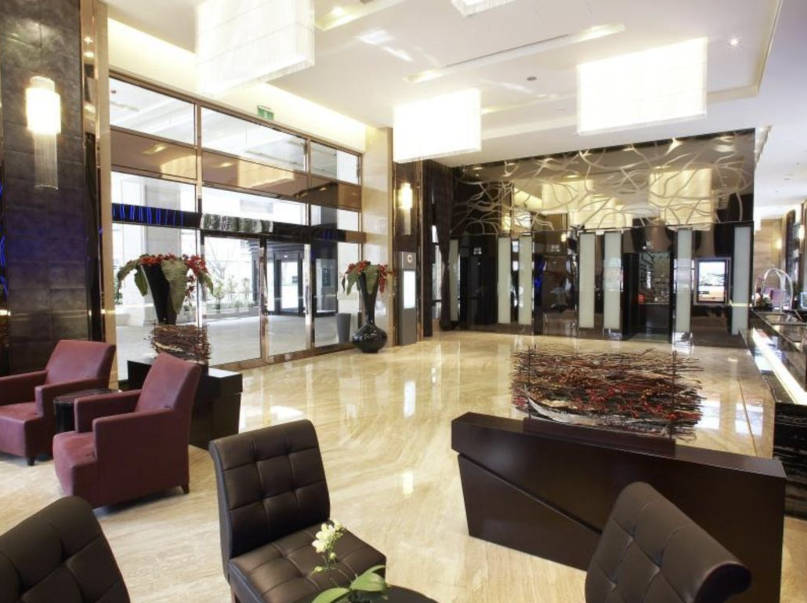

Saya memilih menginap di Hotel Fullon Taiwan selama 3 hari 2 malam karena lokasinya yang dekat dengan bandara dan juga dengan tempat wisata di sekitar kota. Selain itu, banyak ulasan positif tentang kenyamanan kamar, kualitas pelayanan, dan variasi sarapannya yang membuat saya tertarik mencoba.
Fasilitas & Pengalaman Menginap
Hotel Fullon Taipei Central dibangun pada tahun 2010 dan dikenal sebagai hotel mewah dengan 317 kamar yang nyaman. Lokasinya bagus, hanya sekitar 15 menit dari Bandara Songshan dan dekat dengan berbagai tempat wisata di Taipei. Dari sini, juga mudah ke area perbelanjaan Xinyi di sekitar Taipei 101.
Ketika tiba di hotel pada pukul 11 malam, kami tetap disambut dengan ramah oleh karyawan hotel dengan penuh senyum. Mereka juga selalu siap membantu, sehingga proses check-in hotel dapat berjalan dengan lancar. Selain itu, kebersihan hotel benar-benar terjaga, dengan kamar yang selalu rapi setiap hari. Lobi hotel juga terasa luas dengan desain yang kelihatan mewah. Salah satu hal yang menarik perhatian adalah adanya mesin capit di lobi yang sepertinya jadi favorit para remaja.

Untuk kamar, walaupun saya menginap di kamar untuk dua orang, ukuran ruangannya tetap terasa luas dan nyaman. Kasurnya juga sangat nyaman dan mendukung tidur nyenyak. Selama 2 malam terakhir, saya tidur paling nyenyak di kasur itu. Dengan selimut yang tebal dan hangat, kasur yang empuk, dan dua bantal yang disediakan. Setiap lantai juga menyediakan isi ulang air gratis di dekat lift, memudahkan tamu yang kehabisan air minum. Kamar mandi bersih dan lengkap dengan pengering rambut, sampo, dan sabun. Namun, pintu tempered glass kamar mandi tidak tertutup sepenuhnya, sehingga sedikit air keluar saat mandi.

Sarapan & Layanan
Fasilitas hotel cukup lengkap, termasuk gym dan kolam renang yang bisa digunakan tamu. Layanan resepsionis juga sangat membantu dan ramah, membuat pengalaman menginap semakin nyaman. Setiap pagi pukul 06.30–10.00, hotel menyediakan sarapan dengan berbagai pilihan menu, mulai dari masakan khas Taiwan, Cina, Barat, hingga Korea. Menu buah-buahannya juga berganti setiap hari. Saya mencoba beberapa masakan, seperti nasi, mie, bihun, pangsit, hingga berbagai pilihan roti, telur dadar, dan kentang goreng. Semua makanan terasa fresh dan hangat. Pilihan minumannya juga banyak, termasuk teh, susu, jus, dan berbagai tipe kopi.
Kesimpulan
Kesimpulannya, menginap di Hotel Fullon Taiwan selama 3 hari 2 malam memberikan pengalaman yang sangat memuaskan. Mulai dari pelayanan yang ramah, kamar yang luas dan nyaman, serta fasilitas hotel yang lengkap. Sarapan yang disediakan juga bervariasi dan segar. Dibandingkan dengan hotel lain di kelasnya, Fullon Hotel Taipei Central punya fasilitas lebih lengkap dan pelayanan lebih ramah. Meskipun ada sedikit kekurangan pada pintu kamar mandi di kamar saya, keseluruhan pengalaman tetap luar biasa. Hotel ini sangat direkomendasikan bagi siapa saja yang ingin menginap dengan nyaman dan menikmati pelayanan yang berkualitas. Selain itu, lokasi hotel yang dekat dengan bandara membuat semakin praktis dan ideal bagi para pengunjung.